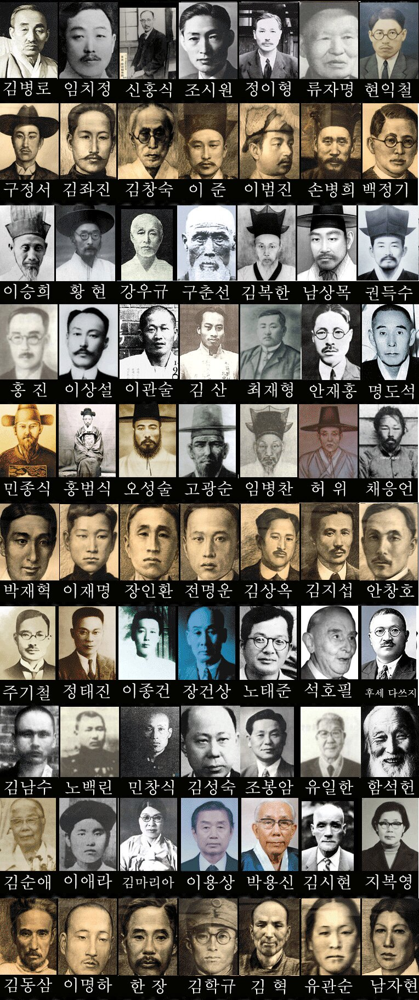

Remember them
그들은 우리들의 기억속에 잊혀지고 있다. 당신은 이분들의 이름과 업적을 아는가? 모를 수도 있다 하지만 기억하고 또 기억해야 역사는 반복되지 않는다.
독립유공자(獨立有功者)는 '독립유공자예우에관한법률'에 따른 순국선열과 애국지사를 말한다. 이러한 순국선열과 애국지사의 숭고한 독립정신을 계승, 선양하고 민족정기와 민족단결을 고취하며 조국의 평화통일과 민족중흥의 역사적 대업에 기여함을 목적으로 1982년 1월 29일, 한국독립유공자협회(韓國獨立有功者協會)가 설립되었다. 2019년 기준으로 국가보훈처가 서훈한 독립유공자는 15,511명이다
